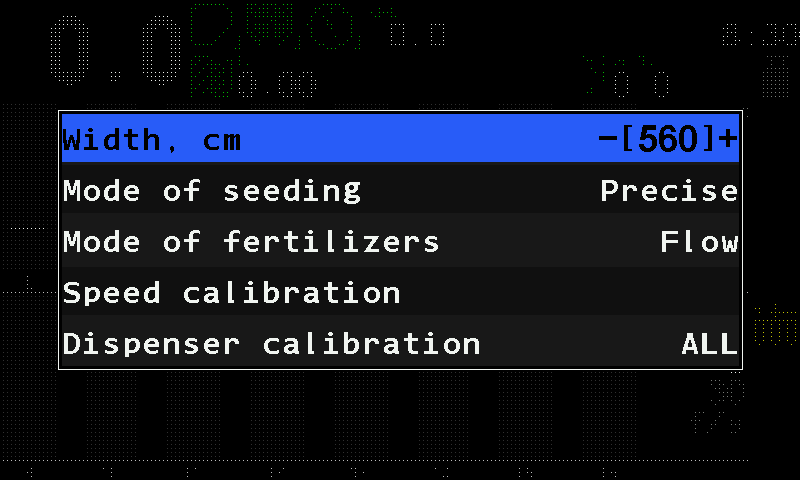
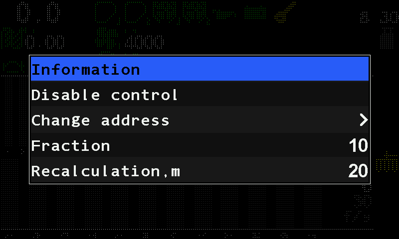
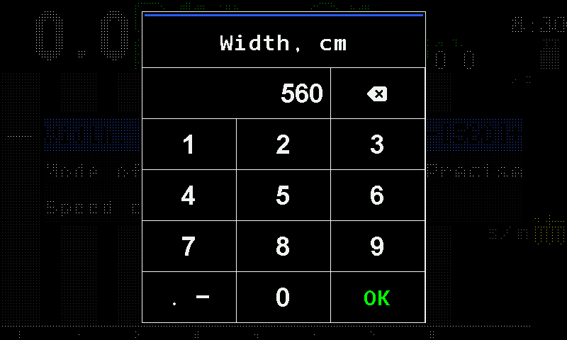

Menus, context menus, number pad and windows
The five things everything on the panel is done through — working screens, the main menu, the context menu of a device, the number pad, and the windows that ask or tell — and how each is worked by touch.
Everything on the panel happens through five things: the working screens, the main menu, the context menu of a device, the number pad and the windows that ask or tell you something. All of them are worked with the fingers; the gestures are listed in Touch zones and gestures. The working screens have their own topic: Working screens.
The main menu
Tap the home screen with two fingers. The main menu opens over the home screen, with its first item selected. On the second home screen, a tap on the settings symbol does the same.

- Selected item. Black text on a blue band. Here “Fill the disks with seeds” — see Fill the disks.
- “Settings”. The settings of the system and of the machine. See The Settings menu.
- Arrow head. The item opens another menu.
- “Service”. Commissioning and service items. Shown from the Agronomist level up.
- “About”. A window with the firmware version and the serial number of the panel; “Close” closes it.
Working a menu by touch:
- Tap an item to select it — the blue band moves to it.
- Tap the selected item again to enter it: it opens its menu, runs its action or opens the number pad. Touch and hold an item does both at once.
- Swipe right or left anywhere over the menu to raise or lower the value of the selected item. A short stroke changes it by one step; a longer one goes on stepping as the finger travels. The swipe always changes the item on the blue band, not the one under your finger. Lists of words go round: after the last word comes the first.
- Swipe up or down to scroll a long menu.
- Tap outside the menu, on the darkened screen, to leave it. A tap with three fingers does the same.
An item is read by what stands on its right. The marks - and + appear around the value of the selected item only.
| What you see on the right | What it means |
|---|---|
| An arrow head > | The item opens another menu. Tap it again. |
| A value between - and + | Swipe right to raise it, left to lower it, right there in the list. |
| A value between -[** and **]+ | A swipe, or a second tap, opens the number pad. |
| ! | The item writes over stored values: it zeroes the statistics, saves or loads settings, sets a device, or resets values to their defaults. Tap it again. |
| Nothing | The item performs an action. Tap it again. |

Settings are stored by themselves a few seconds after the last change; there is nothing to save.
The context menu of a device
Every sensor, motor and indicator on the home screen has its own menu. Touch and hold the device — its icon or its column on the diagram — for more than half a second, and its context menu opens. A short tap does nothing. On the Motors screen and on the second home screen the same works for a motor tile.

The first item, “Information”, opens the status screen of the device; there a swipe right or left shows the next or the previous device, and a swipe up or a three-finger tap returns. The second item switches the control: “Disable control” or “Enable control” — see Take a sensor into or out of control. Below them stand the parameters; which ones you see depends on the access level (Access levels). All parameters: Sensor settings.
Entering numbers
When a value is written between square brackets, changing it opens the number pad.

- Name of the parameter. Here “Width, cm”.
- Value. What you have typed so far.
- Backspace. Deletes the last digit. Touch and hold it to clear the whole value.
- Digits. 1 to 9.
- Point key. Adds the decimal point — only for a value that has decimals.
- Zero.
- “OK”. Accepts the value.
A value outside the permitted range is not refused: the panel sets the nearest limit instead.
Windows that ask, and windows that tell
A window is a box in the middle of the screen with a coloured strip along its top — without a word in it — and the message under the strip.
| Window | What it is | How it closes |
|---|---|---|
| Blue strip, buttons below | The panel asks. Nothing happens until you answer. | Touch “Yes” (green) or “No” (red). A touch outside the box cancels: nothing is changed. |
| Blue strip, no buttons | The panel tells you what happened. | Some close by themselves after about two seconds, others with a touch inside the box. |
| Red strip, no buttons | The panel reports an error, for example “Invalid PIN”. | As above. |
| Red strip and a red bar with “FAILURE!” | An alarm. | See below. |
A question window ignores touches during the first half second, so that the touch that opened it does not answer it.

Alarm windows
An alarm window says what happened, on what kind of device, and which devices — their numbers are listed when several identical sensors report the same fault, for example #1-4,7. While it is open, the panel sounds the alarm.

Touch “Close” in the window. This alarm closes and the sound stops; the next alarm in the queue appears. Nothing else closes an alarm window — touches elsewhere are ignored.
Something your machine does that this page does not answer? Write to support@agriwelt.com — an engineer answers.